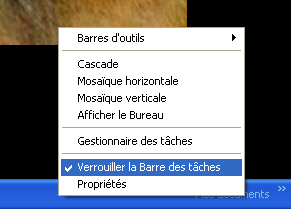
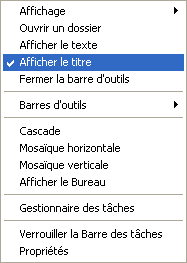
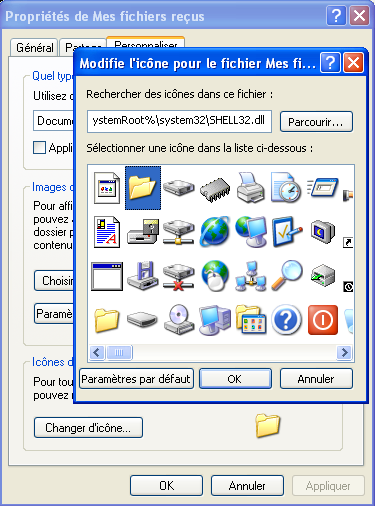

Vous souhaitez avoir un accès rapide à tout vos jeux ou programmes favoris ? Votre barre d'accès rapide est vide ou souhaitez-vous la supprimer ?
Pas de problème ;) Car ici, on va apprendre à faire son propre menu ! Disponible d'un clic dans la barre des tâches !
Vous pourrez dés lors donner un accès à tout vos programmes/jeux/fichiers favoris dans un menu directement incrusté dans votre barre des tâches, et ce tout simplement ;) Vous pourrez même choisir vos propres sous-icônes et faire des sous-menus !
Tout d'abord, vous devez savoir que votre barre des tâches est très flexible ! Vous pouvez ajouter autant de barres d'outils que vous souhaitez, à condition d'avoir de la place sur votre écran bien sûr. ;)
Par défaut, votre barre d'outil est "vérouillée" (sous windows 98 SE et plus). Ce therme signifie que vous pouvez ajouter/supprimer des barres d'outils, mais que vous ne pouvez pas les déplacer !
Et comment vérouille-t-on ou dévérouille-t-on notre barre des tâches ? :o
Tout simplement en faisant un clic droit sur une surface vierge de cette dernière ! :D

Et puis la petite coche, vous connaissez sûrement ! :D Si il y a la petite coche, la barre est vérouillée, sinon, elle est dévérouillée ! ^^
Et y a t-il des signes si ma barre est vérouillée/dévérouillée ?
Maintenant, nous allons apprendre à créer une barre d'outils faisant menu ! Mais ne vous inquiétez pas, nous n'allons pas taper de lignes de programmations ou de je ne sais quel plugin bidulle chouette qui ne fait qu'alourdir les ressources au démarrage ! :)
Maintenant, nous allons nous baser sur le même système pour créer notre menu.
Nous allons commencer par créer un dossier n'importe où dans votre disque dur, à condition qu'il ne se fasse pas supprimer. (mettez-le en lecture seule pour être sûr ;) )
Ensuite, pour créer le menu, faites un clic droit sur votre barre des tâches (sur un espace vide), allez dans Barres d'outils et cliquez sur Nouvelle barre d'outils... (voir plus haut).
Maintenant, nous allons chercher notre dossier en naviguant dans la fenêtre des dossiers. Une fois sélectionné, cliquez sur OK.
Votre barre d'outils apparaît alors, normalement vierge (il n'y as pas encore de fichiers dans votre dossier ;) ).
Or, si vous ajoutez un fichier dans ce dossier, la barre d'outils affichera des icônes, et non des menus !
Pour celà, cliquez droit sur la poignée de déplacement de la nouvelle barre d'outils (poignée qui apparaît seulement en mode dévérouillé). Dans le menu qui apparaît, cochez la ligne "Afficher le titre".

Là, le nom de votre dossier apparaît à la place des icônes !
Pour remplir votre menu, c'est très très simple !! :D
Cliquez droit sur le nom de votre "barre d'outils" et cliquez sur "Ouvrir un dossier".
Là, votre dossier s'ouvre !
Dés maintenant, nous allons commencer à le remplir, mais seulement voilà, nous devons ruser le système afin que l'on puisse afficher les icônes que l'on veut.
En fait, vous allez devoir créer un dossier, nommé "_données". Mettez-le en dossier caché. De cette façon, le menu ne l'affichera pas !
Je vais clairement vous expliquer : tous les fichiers dont vous voulez personnaliser les icônes, vous devrez les mettre dans ce dossier ! Après, vous devrez créer un raccourcis vers ce fichier. Dés lors vous pourrez modifier l'icône à votre guise ! :D
A présent, vous pouvez remplir votre dossier comme vous le souhaitez !
Le menu, lui, se mettra tout seul à jours ! ;)
Créer un sous-menu
Pour créer un sous-menu, c'est extrêmement simple ! Créez tout simplement un dossier dans votre dossier, et nommez-le comme bon vous semble en sachant que le nom de votre dossier est le même que celui de votre sous-menu bien sûr. ;)
Avec windows XP, il est possible de modifier l'apparence d'un dossier et de modifier l'icône directement, sans créer de raccourcis ! Faites un clic droit, et cliquez sur Propriétés. Ensuite, onglet Personnaliser, cliquez sur le bouton "Modifier l'icône...". Ensuite choisissez votre icône préférée et cliquez sur OK.

Voilà ! Vous avez maintenant votre petit menu d'accès rapide simple d'utilisation et personnalisable ! :D
Vous pouvez y mettre toutes sortes de fichiers et ca ne prend que quelques pixels sur votre écran, quelque soit le nombre de fichiers ! Mais rappellez-vous que les menus de ce genre n'affichent pas les fichiers cachés ! ;)
Ceci peut vous faire gagner beaucoup de temps et vous supprime cette barre de lancement rapide, qui prend de plus en plus de place sur votre écran !
{kind=link}
{kind=link}